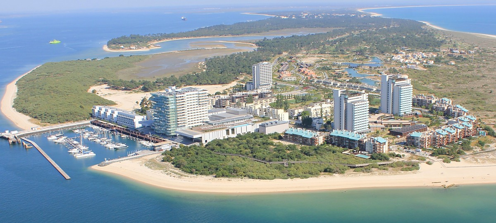
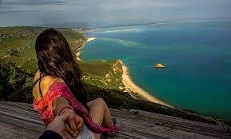
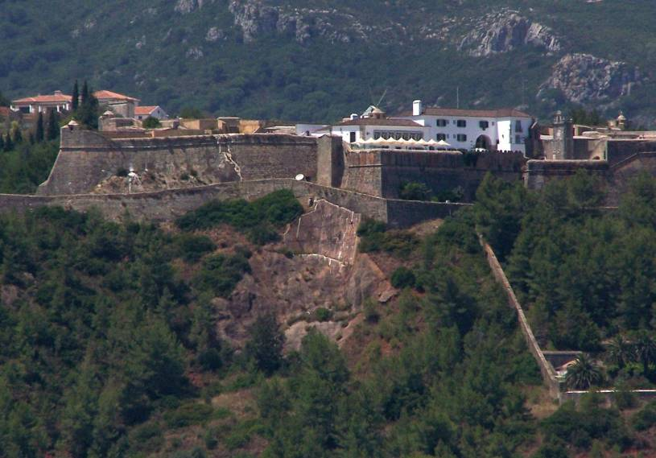
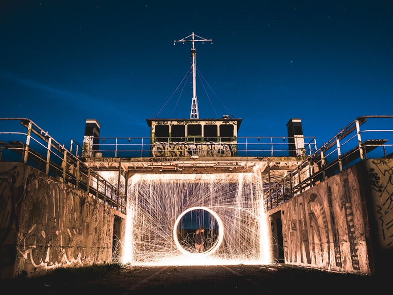

"Troia Resort"

Tróia (Portuguese pronunciation: [ˈtɾɔjɐ]) is a peninsula located in Grândola Municipality (parish of Carvalhal [pt]), Portugal, next to the Sado River estuary. Tourism is the peninsula's main activity due to its long beaches facing the Atlantic. There is a ferry boat connection between the peninsula and the city of Setúbal. Tróia has important archaeological sites dating from the time when the peninsula was an island called Acalá, settled by the Romans.
Source: https://en.wikipedia.org/wiki/Tr%C3%B3ia_Peninsulas
"Arrábida Natural Park"

Arrábida Natural Park (Portuguese: Parque Natural da Arrábida) is a protected area in Portugal. Founded in 1976, the park occupies an area of 176.41 km2 (68.11 sq mi), (123.30 km2 (47.61 sq mi) on land and 53.11 km2 (20.51 sq mi) at sea) covering the southernmost margin of the Setúbal Peninsula.
One of the park's unique features is its mountain range, Serra da Arrábida (501 metres (1,644 ft)), chalky in constitution, which comes into contact with the ocean similarly to some locations in the Mediterranean, contrasting with the usual Portuguese coast (long sand beaches and cliffs)
Three of the park's beaches — Galapinhos, Portinho da Arrábida and Figueirinha — are popular among the inhabitants of Lisbon and Setúbal. Overlooking the three beaches is the Convento de Nossa Senhora da Arrábida (Convent of Our Lady of Arrábida), a former monastery established in the 16th century, managed today by the Fundação Oriente.
Source: https://en.wikipedia.org/wiki/Arr%C3%A1bida_Natural_Park
"Fort of São Filipe"

The Fort of São Filipe de Setúbal, also referred to as the São Filipe Castle or the São Filipe Fortress, is in the city of Setúbal in the Setúbal District, of Portugal. The fort was built on the orders of Philip II of Spain (Philip I of Portugal), who personally witnessed the laying of the cornerstone of the new fortification in 1582. It stands in a dominant position on the right bank of the mouth of the Sado River, overlooking the centre of Setúbal to its east.
Source: https://en.wikipedia.org/wiki/Fort_of_S%C3%A3o_Filipe_de_Set%C3%BAbals
"Visit Setúbal"
Setúbal Tourism - Official Website
"15 Best Things to Do in Setúbal"

15 Best Things to Do in Setúbal - The Crazy Tourist
"Tourist Offices"
Town Hall - Tourist Offices